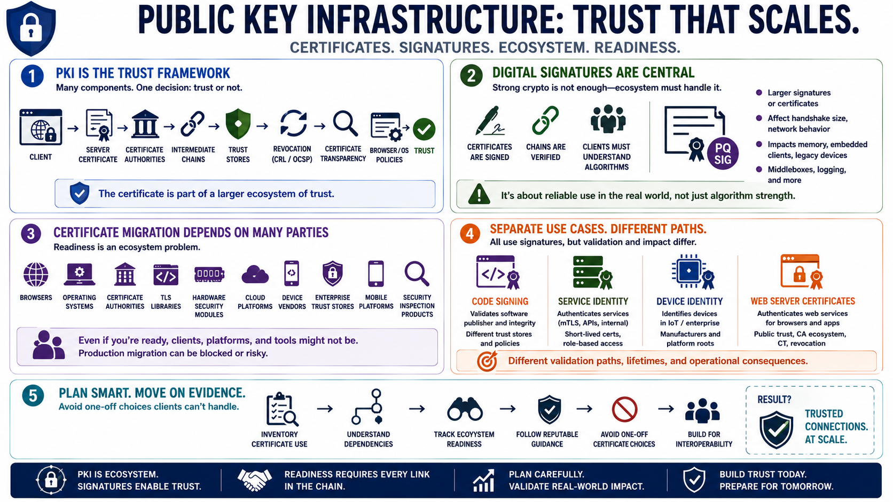

Certificates, PKI, and Web Trust
Connecting to LMS... Progress: in progress

Narration
Public key infrastructure is the trust framework that makes web service authentication scale. Server certificates, certificate authorities, intermediate chains, trust stores, revocation mechanisms, certificate transparency practices, and browser or operating system policies all contribute to the decision a client makes when it accepts a TLS connection. For a web service, the certificate is not just a file on disk; it is part of a larger ecosystem of trust.
Digital signatures are central to that ecosystem. Certificates are signed, certificate chains are verified, and clients must understand the signature algorithms involved. Post-quantum signature algorithms can introduce larger signatures or certificates, and that may affect handshake size, network behavior, memory usage, embedded clients, legacy devices, middleboxes, and logging. The concern is not only whether an algorithm is strong; it is whether the surrounding ecosystem can use it reliably.
Certificate migration depends on many parties. Browsers, operating systems, certificate authorities, TLS libraries, hardware security modules, cloud platforms, device vendors, enterprise trust stores, mobile platforms, and security inspection products all influence readiness. A service owner may be eager to move, but if clients cannot validate the chain or a managed platform does not support the needed options, production migration may be blocked or risky.
It also helps to separate related use cases. Code signing, service identity, device identity, and web server certificates all use digital signatures, but they have different validation paths, lifetimes, and operational consequences. Teams should track ecosystem readiness before changing production certificate strategy. The near-term planning move is to inventory certificate use, understand dependencies, follow reputable guidance, and avoid one-off certificate choices that clients cannot handle.